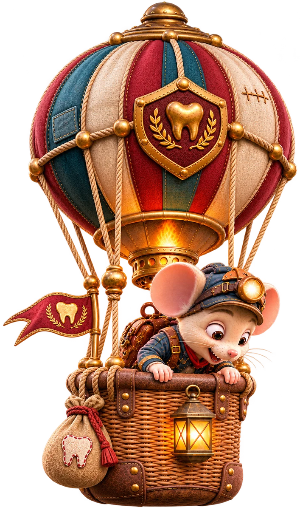

Villa PérezModo padres
UN SECRETO ENTRE VOSOTROS Y PÉREZ
Preparemos la visita
de Pérez
Crea un recuerdo mágico con la foto,
el vuelo y las huellas de esta noche.
 FOTO DE EJEMPLO
FOTO DE EJEMPLOLa habitación de tu peque
La cama abajo y espacio arriba para el globo.
Vídeo mágicoFoto, recorrido y un recuerdo para guardarCREAR

Vuelo de PérezDibuja su camino con el dedo Huellas mágicasUna pista sobre la almohada o la mesita Cámara MágicaEl visor que verá tu peque esta nocheDespués de crear el vídeo, actívalo en la Cámara Mágica desde el editor.
Tu foto se guarda solo en este dispositivo. Puedes eliminarla cuando quieras.
- Foto
- Vuelo y huellas
- Vídeo listo